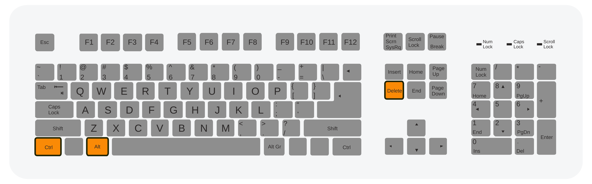
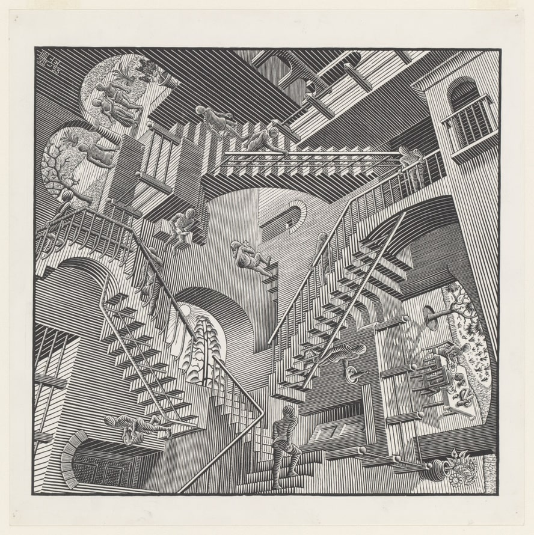
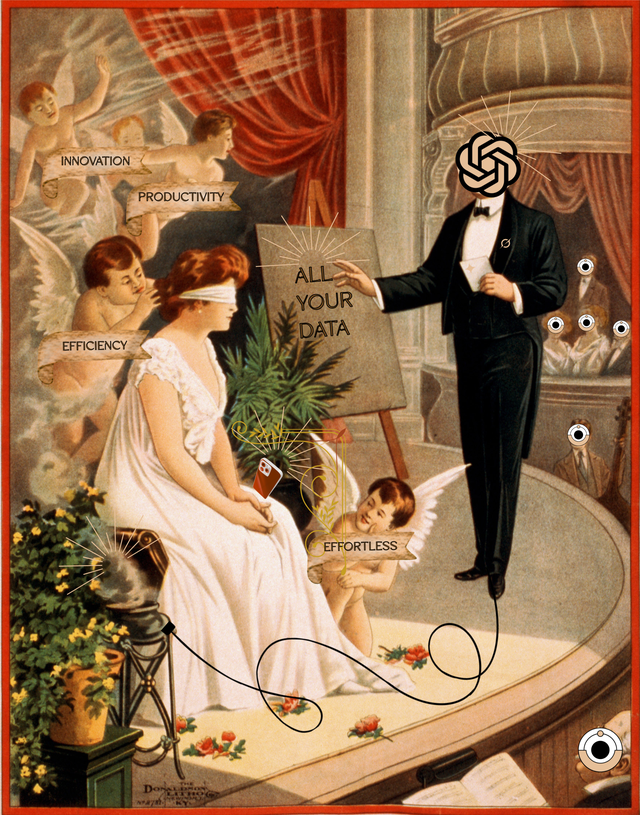

# <small>AI and Historical Practice: The Archipelago and the Method</small> <br /> <small>**Frédéric Clavert** / C²DH — University of Luxembourg</small> <small>Ctrl-Alt-History / University of Antwerp / 29 April 2026</small> Note: First, thank you for inviting me to talk today, a special thanks to Eline Ceulemans with whom I have discussed quite a lot, and to Maarten van Ginderachter for presenting me. Explain title But before I do, I need to spend a few minutes on the title of *this conference* — Ctrl-Alt-History — because it frames what I want to do today.
## From *Ctrl-Alt-Del*... <p></p> <p style='font-size:11pt;'><a href="https://commons.wikimedia.org/wiki/File:Three-finger_salute.svg#/media/File:Three-finger_salute.svg">A Qwerty keyboard (scheme), STRG-ALT-ENTF highlighted. Sven. CC BY-SA 3.0</p> Note: There is a theoretical framework on the temporality of updates, crashes and reboots as a cultural regime, in a quite important work by Wendy Hui Kyong Chun [@Chun_2016]. She uncovers a paradox: we update and restart precisely in order to stay inside the same habitual media environment. In this framework, rebooting is not seen as an isolated gesture but as a structure of habitual digital life: we restart constantly in order to continue. The reboot is what we reach for when we no longer understand what is happening inside the machine. It is, in a way, an act of epistemic surrender: we give up trying to debug, and we start over. Since 2022 and the rise of chatbots that high-lighted the current trend of generative-AI-based innovations, have we, as historians, lost our understanding of what is happening around us and inside our main tool, the computer, so that we need to reboot?
## ...to *Ctrl + Alt + **History*** **History as what is threatened** OR **History as what allows us to reboot differently** <p style='font-size:11pt;'><a href="https://commons.wikimedia.org/wiki/File:Nintendo-Super-Famicom-Console-FL_(Reset_Button).jpg">Evan-Amos, Public domain, via Wikimedia Commons</p> Note: This conference replaced *Del* with *History*. I read this substitution in two incompatible ways, and I am going to keep them both alive across the whole keynote. - First reading: **history as the threatened term.** The *Del* key, in this reading, is generative AI. History is what stands to be deleted: automated archival work, interpretation replaced by statistical prediction, hermeneutic traditions flattened into tokens. In this reading, Ctrl-Alt-History is a cry of alarm. - Second reading: **history as the response.** History, here, is what we reach for when our system of knowledge freezes. When the epistemology of the chatbot leaves us speechless, when we do not know how to evaluate what a machine "tells" us about the past. THen we reach for the historian's craft. In this reading, Ctrl-Alt-History is a programme: use history to reboot the debate. I am going to refuse to choose between these readings today. I like the tension between them, a tension I see as a strong motivation. I will come back to this tension in the conclusion.
## Look, they have six fingers <p style='font-size:11pt;'>Author with DALL.E (2023)</p> Note: I will add one more comment to this introduction. We need to move away from chatbots, or at least from the way chatbots are putting together words to form some sort of narration of the historical past. Those narrations (if there's no RAG, if there's no correct prompt) look like the images that were generated three years ago: metaphorically they have six fingers. This is not nothing. Factual errors in historical discourse matter, and the scale at which generative systems are now producing such discourse is genuinely new -- the scale is new, not misinformation, of course. I am not here to dismiss these concerns. But *this is the wrong question* around which to organise our debate. If the only question we know how to ask is "does AI get the facts right?", we remain stuck inside an image of AI that is obsolete — the AI-as-oracle. And the real transformation of our practice is happening elsewhere, in the places where this question does not reach. So something is blocking when we speak about AI -- here generative AI -- to many historians, students, etc. I want to argue that what is blocking is our image of what AI is. By 'our', I mean historians collectively.
# <small>I. The wrong question?</small> <p style='font-size:11pt;'>La Clé des songes, René Magritte, 1927, Art Institute of Chicago</p>
## Legitimate fears - Hallucinations - Factual imprecisions - Plagiarism - Deskilling - Opacity of the models Note: There are a series of historians' fears that deserve to be taken seriously. They are legitimate and serious. They are all based on the *same image* of what AI is, the AI-as-oracle -- I'll get back to that in a few minutes.
## <small>Hallucinations</small> <small>*Not a bug. A feature*</small> <p></p> <p style='font-size:11pt;'>M.C. Escher, "Relativité", 1953 Lithographie, 277x292 mm, Collection M.C. Escher Heritage, Pays-Bas - All M.C. Escher works © 2025 The M.C. Escher Company, The Netherlands.</p> Note: - Not a bug, a feature of the mechanism: a language model produces plausible text. - Plausible-true = correct ; plausible-false = hallucination -- a very anthropomorphic term that is a problem, btw. - Ratio improves, mechanism unchanged - Any historian using these tools must understand this
## Factual imprecisions <p style='font-size:11pt;'><a href='https://commons.wikimedia.org/wiki/File:Out_Of_Focus_City_(Unsplash).jpg'>Out Of Focus City (Unsplash). Nick Turner. CC0</a></p> Note: - Shades into hallucination but distinct as a category - E.g. cites a real historian, attributes words they never wrote A recent example: a French article in communication science attributed to Latour a book actually published by Raisons d'Agir, a Bourdieusian French publisher -- for those who know a bit of French sociology, it is honestly hilarious. see: [@Coulmont_2026] - For our discipline based on the indirect observation of the past through old artefacts — it is non-trivial.
## Plagiarism > What does it mean, *epistemically*, to incorporate into one's argument a sentence produced by a machine trained on millions of other sentences? Note: This question is all the more interesting given that I asked Claude to generate it. - Beyond the student-essay case. - epistemic status of a machine-produced sentence in an argument - Trained on millions of other sentences — where does authorship sit?
## Deskilling <small><span><a href="www.paulinewee.com">Pauline Wee</a> & <a href="www.dair-institute.org">DAIR</a> / <a href="https://betterimagesofai.org/images?artist=PaulineWee&title=FirehoseII">Firehose II</a> / <a href="https://creativecommons.org/licenses/by/4.0/">Licenced by CC-BY 4.0</a></span></small> Note: If the machine does the translation, the summary, the first draft — does the graduate student of 2030 *still learn* how to do those things? - it's a real pedagogical fear — not dismissing it - If the machine does translation / summary / first draft → does the 2030 grad student learn them? - Honest: I have not resolved this And we could go further: deskilling can also concern us, already trained historians, if chatbots are badly used.
## Opacity <p></p> <small><span><a href="https://www.instagram.com/daniela_zampieri/?hl=en-gb ">Daniela Zampieri</a> / <a href="https://betterimagesofai.org/images?artist=DanielaZampieri&title=TheAI-Deal">The AI-Deal</a> / <a href="https://creativecommons.org/licenses/by/4.0/">Licenced by CC-BY 4.0</a></span><small> Note: We do not have full access to what is inside these models, nor to the data on which they were trained. With open source models, we can know the weights but we still do not know the training data of those models (with few exceptions). As our discipline's epistemology rests on *traceability of sources*, this introduces a structural tension that we cannot easily dismiss.
## the chatbot-oracle <small><a href="https://fr.wikipedia.org/wiki/Pythie#/media/Fichier:Oracle_of_Delphi,_red-figure_kylix,_440-430_BC,_Kodros_Painter,_Berlin_F_2538,_141668.jpg">Consultation de l’oracle de Delphes</a>. Kylix en céramique à figures rouges, vers 440-430 av. J.-C., par le peintre de Kodros (Altes Museum de Berlin, F2538, 141668). CC-BY-SA 4.0</small> Note: - AI figured as speaking entity: question → pronouncement → we grade it - Oracle frame: correct *for chatbots* -- though with time, it's less and less true, wrong *for AI as a whole* - Chatbots = consumer tip of something much larger -- and we could also argue, that from one to the other, the oracle dimension is not at all the same - If we stay within the oracle frame, we miss something, we miss the real transformation
## A diversity of epistemic signatures - Language models (LLMs) - Agents and automated workflows - Research infrastructures - Corpus interrogation tools - Systems connecting heterogeneous sources Note: - AI ≠ chatbot. The landscape: - LLMs (often silent inside pipelines — classify, extract, embed) - Agents/workflows (not answering — *operating*, with tools) - Research infrastructures (→ P2) - Corpus tools (→ P3 Lester) - Systems connecting heterogeneous sources (the decisive one) - Each has different failure modes and epistemic commitments - Collapsing them all = "microscope = all scientific instruments" **A language model** is a statistical system trained to predict the next token in a sequence. It can be deployed as a chatbot, usually with many other layers of software, but it can also be deployed silently inside a pipeline — to classify documents, to extract entities, to align translations, to generate embeddings for semantic search. Most of these uses have nothing to do with dialogue. **Agents and workflows** are systems in which a language model is given tools — a search function, a database query, a file reader — and invoked iteratively to accomplish a task. The model is no longer "answering"; it is operating. This is a very different epistemic object. **Research infrastructures** are the layer where AI meets the cyberinfrastructure tradition — I will return to this at length in Part 2. **Corpus interrogation tools** are what let us ask semantic questions of messy archival material — more on this in Part 3. **Systems connecting heterogeneous sources** are for me a decisive point. The most interesting thing generative AI does, for historical research, is not produce text. It is connect things that did not previously connect. Each of these has different failure modes, different epistemic commitments, different relationships to the historian's craft.
## Connecting <small><a href="https://commons.wikimedia.org/wiki/File:Pont_du_Gard_v2_082005.jpg">Pont du Gard, août 2005</a>, Patrick Clenet. CC BY-SA 3.0</small> Note: The main epistemic shift introduced by generative AI in our field is not about what these systems *say* or *answers*. It is about what they allow us to *ask* — and in a way, this question has been present since the advent of digital humanities and digital history as we know them, for the past twenty years. For instance, semantic search across a noisy corpus means we can find conceptual proximities where keyword search would have failed. There were techniques that existed before machine learning, but machine learning and language models today enable something much more efficient. Dynamic query reformulation means the research question can evolve *during* the search, not only before and after it. Bridging structured and unstructured sources means we no longer have to pre-model our archive in order to interrogate it. And — this matters — these tools *negotiate* rather than *impose*. An agent asks itself whether it has enough information. It calls one more tool. It revises its approach. This is categorically different from a database query, which either returns results or does not. I will demonstrate this concretely in Part 3 with the Sean Lester dataset. For now, I ask you to hold this substitution in mind: not AI as *speaker*, but AI as *connector* and hence as infrastructure.
## The displacement we need | From... | To... | |---|---| | AI as *oracle* | AI as *infrastructure* | | "Does AI get things wrong?" | "What does AI change about what we can ask?" | | Content reliability | Transformation of practice | Note: - **Oracle → Infrastructure** An oracle is consulted; an infrastructure is inhabited. We do not evaluate an infrastructure by asking whether it tells the truth. We evaluate it by asking what it enables, what it makes impossible, whom it serves, and whom it excludes. Moving from *oracle* to *infrastructure* is moving from a Delphi frame to a Latourian frame — from a question about pronouncements to a question about the sociotechnical assemblage. - **"Is AI wrong?" → "What does AI change?"** The first question is evaluative and terminal: we give the system a grade. The second is genealogical and ongoing: we ask how our practice is being reconfigured. The first question is answered once and for all; the second has to be asked again every time the practice shifts. - **Content reliability → Transformation of practice**: This is the most important shift for us as historians. The epistemology of our discipline is not primarily about the reliability of individual statements; it is about the traceability of how we came to those statements. The transformation of practice — *how* we search, *how* we connect, *how* we revise — is where the epistemological action is.
## Uncertainty as a core feature <small><a href="https://commons.wikimedia.org/wiki/File:Set_of_dice-Saint_Raymond-IMG_0107-white.jpg">Rama</a>, <a href="https://creativecommons.org/licenses/by-sa/3.0/fr/deed.en">CC BY-SA 3.0 FR</a>, via Wikimedia Commons</small> Note: We read fragmentary evidence. We formulate hypotheses. We revise them in the light of new sources. We make arguments that could, in principle, be overturned by the next find. We have not, as a discipline, developed a shared vocabulary to describe this probabilistic navigation. We have left it implicit, as a kind of tacit craft. One of the things generative AI is doing — and this is what I want us to notice — is making this probabilistic navigation *explicit*. Not because the machines reason the way we do, but because working with them forces us to put into words what we do. The AI system that revises its own queries is a mirror for the historian who revises her own hypotheses. This mirror is, perhaps, the most interesting thing AI gives us.
# <small>II. The archipelago syndrome</small> <small><a href="http://ark.bnf.fr/ark:/12148/cb40664962r">Plan de l'archipel de Mergui depuis la pointe de Tavaye jusqu'aux isles Ste Susane</a></small>
## A long established diagnosis The **archipelago syndrome** > Dacos, Marin. <a href='https://shs.hal.science/hal-00871765'>‘Cyberclio. Vers Une Cyberinfrastructure Au Cœur de La Discipline Historique’</a>. *L’histoire Contemporaine à l’ère Numérique / Contemporary History in the Digital Age*, edited by Frédéric Clavert and Serge Noiret, P.I.E.-Peter Lang, 2013, pp. 29–41. Note: In 2009 (published 2013), during a conference I organised the first time I worked in Luxembourg, Marin Dacos, at the time head of what would later become OpenEdition, talked about the Humanities as a digital archipelago (in terms of data, methods, platforms, etc.). The archipelago syndrome is about dispersed corpora, inert documents, an impossible cartography. His answer was -- remember we're in 2009 -- a **cyberinfrastructure** (borrowed from NSF Atkins Report 2003). In a way -- and I don't want to underestimate what many projects on linked open data for instance did since then -- we can argue that the current trend of innovation in AI could be the most serious attempt, more than 15 years later, to deliver this cyberinfrastructure that would connect the different islands of the historians' digital archipelago to one another.
## Did the archipelago persist? > Historical data is not a kitten, it’s a sabre-toothed tiger (Lermercier / Zalc) Note: Between 2010 and 2025, massive investments were made — at national level (Huma-Num in France, CLARIAH in the Netherlands), at European level (DARIAH and CLARIN as ERICs, European Research Infrastructure Consortia), at project level (countless Horizon 2020 projects). And yet: any historian in this room, sitting down to a new research project today, still experiences the archipelago. The project-specific database. The local metadata schema. The tool that works for one corpus but not the next. The shared standards that required so much upstream ontological work that most scholars simply did not use them. Here, the different epistemic instances of AI remove the requirement of prior standardisation. AI agents, for instance, negotiate across heterogeneity rather than imposing homogeneity, of course with limitations. During a meeting at the C²DH, my colleague Caroline Muller (from Rennes 2) and I set out a series of provocations. One of them was: history deals with messy data. Claire Lemercier and Claire Zalc even argue that it's what is good about historical data: "Historical data is not a kitten, it's a sabre-toothed tiger". | Moment | Answer | Limit | |---|---|---| | 1990s | Databases, GIS | Disciplinary silos | | 2000s | Linked Open Data, cyberinfrastructures | Rigid upstream standardisation | | 2010s | DARIAH, CLARIN | Institutional scale, low agility | | Today | AI agents | To be evaluated — the subject of this keynote | - Walk through the four rows on the vertical sub-slides (↓) - Each row: a different *kind* of answer to the same archipelago problem - Today's row = what we are evaluating — *structurally different* answer
## The example of AI agents *We are historians. We do not believe in solutions.* Note: - Not framed as "solution" — historians don't do solutions - *Structurally* different: removes the upstream-standardisation requirement - What we evaluate across the rest of the keynote - There is a price -- we'll come back to that
## From linking data to linking practices <small><a href="https://www.instagram.com/nadning/">Nadia Nadesan</a> & <a href="https://digital-dialogues.co.uk/">Digit</a> / <a href="https://betterimagesofai.org/images?artist=NadiaNadesan&title=DeceptiveDialogues">Deceptive Dialogues</a> / <a href="https://creativecommons.org/licenses/by/4.0/">Licenced by CC-BY 4.0</a></small> Note: Previous generations of connective technology operated at the level of data: they required the sources to be pre-modelled in a shared representation. Databases needed schemas. Linked data needed ontologies. The intellectual labour was all upstream. AI agents operate at the level of *practices*. An agent can read a PDF of poor scan quality, a structured database, a blog post, an archival description, and a tweet, and reason across them without requiring that they be pre-modelled in a common schema. This is not magic; it is the combination of two things: (a) language models can produce robust semantic representations of unstructured text on the fly, and (b) agents can decide, mid-task, to call additional tools or sources. This is a genuinely different epistemic object. Whether it delivers on its promise is an empirical question.
## The archipelago of (discrete) practices The challenge is not the reliability of a single tool. It is the **coherence of an archipelago of (discrete) practices**. Note: - Contemporary historian (not just DH people) already navigates strata — paper, digitised, born-digital, scraped data, and they navigate it through an archipelago *of practices*. Most of those practices are what Caroline Muller and I have called "discrete practices". - THe point of generative AI and notably AI agents is that it helps you *navigate this archipelago without demanding that it first become an empire* - Research challenge shifts: not "is this tool reliable?" but "is the archipelago of my practice coherent?" Epistemic burden back where it belongs — on the historian
# III. connecting the archipelago today (demo)
## ClioDeck - navigating heterogeneous sources with no upstream data-modelling required. - can be fully local - all documents is indexed (lexically and semantically) - knowledge graph (NER)
## The Sean Lester case **Sean Lester (1888-1959)**: Irish diplomat, High Commissioner of the League of Nations in the Free City of Danzig, 1933-1937.
## Stochastic maieutics > AI as the interlocutor who helps thought to be born. Note: Go back to the Sean Lester experiment. - part of this keynote was born in a conversation with Claude about MCP servers → drifted to cyberinfra → Dacos 2009 → structure emerged - Not a confession — **the demonstration in act** of what I'm arguing - The keynote is itself a cyborg artefact; genesis traceable in a log - So is much of the intellectual work I produce today — and much of yours, named or not - Turn now: from demonstration to consequence - *Maieutics* = Socratic, **Plato, *Theaetetus* 148e-151d** — philosopher as midwife, adds no content, facilitates delivery - *Stochastic* = interlocutor is probabilistic (LLM generates statistically plausible) - Empirical finding: those plausible responses are precisely the ones that let me formulate my next thought - Labour mediated by stochastic process → thinking-*with*, not outsourced thinking - ≠ oracle (consulted for answers); = maieutic interlocutor (engaged for the labour of thinking-with)
## ethics Note: Let's conclude Part 3 with a question — what about ethics? I built ClioDeck as a POC. I don't code -- basically, it's Claude Code that coded it, following my instructions. When I use Claude to help think through a keynote, I am distally complicit — in the labour conditions of the annotators who made the model possible; in the energy consumption of the data centres that run it; in the geopolitical asymmetries of who controls which model. I did not build the system. I cannot individually fix it. But my use contributes, at a distance. That's one of the cost of using AI.
# IV. The cost of using AI
## Discrete practices and debates on AI uses Note: What I have described leads us to a common feature: most of it happens quietly. It happens inside the researcher's workflow, between them and the model, can be erased from the final output (theoretically ClioDeck keeps traces of everything). A monograph that took shape in dialogue with Claude could look exactly like a monograph written alone. This discretion is not neutral. It is what makes these practices both powerful and dangerous. Powerful, because they integrate seamlessly into existing intellectual work. Dangerous, because they escape both institutional regulation and disciplinary debate. Dacos, in 2009, already identified this risk for cyberinfrastructures: the quiet plumbing that no one discusses is exactly the plumbing whose design assumptions become unexamined constraints. The risk is identical here, with an additional twist: the plumbing now *reasons* with us.
## Discrete digital practices <img src='img/42.jpg' width='30%'> Note: - **Clavert & Muller, *Écrire l'histoire. Gestes et expérieneces à l'ère numérique*, Armand Colin, 2025** — concept of *pratiques numériques discrètes* - Three criteria: digitally mediated, undocumented in output, not methodologically discussed - Aggregate effect: discipline transformed silently — not at individual ethics level, at aggregate level - A discipline that shifts by 2030 without its literature noticing has lost control of its own transformation - Inequality: invisible practices favour those with best tools → visibility as precondition for action
## Three structural ethical risks 1. **Digital labour** — the annotators who make the models possible 2. **Environment** — energy, water, carbon, raw materials 3. **Sovereignty** — who controls the corpora, who accesses the results Note: Discrete practices and their epistemic and methodological consequences may induce a high cost for using AI at the level of the discipline. On a more general level, we cannot ognore other costs.
## Digital labour **The annotators who make the models possible.** Note: - References: **Gray & Suri, *Ghost Work*, 2019** — empirical study of on-demand workforce labelling training data - **Casilli, *En attendant les robots*, 2019** — political economy of click-work and platform capitalism - Reinforcement Learning with Human Feedback phase: annotators reviewing outputs, often reading toxic content for hours to teach refusals - Honest posture: acknowledge (saying it on stage = visibility), support collective reform
## Environment **Energy. Water. Carbon. Raw materials.** Note: [@Bender_2021] / [@Strubell_2019] Training costs are dramatic. Deployment costs, at scale, may exceed training. - **Training** (Strubell et al., ACL 2019) — first systematic estimate; transatlantic-flights headline; absolute costs have grown with model size - **Inference** — less discussed but at deployment scale potentially exceeds training; water cooling a concern in drought regions - **"Stochastic Parrots"** (Bender, Gebru et al., FAccT 2021) — essential reading (also: the paper that cost Gebru her Google job) - For us: cannot individually solve. Minimise waste (do we need to run the same query ten times?). Advocate transparency. Support regulation.
## Sovereignty **Who controls the corpora? Who accesses the results?** Note: Most frontier models are US-owned. Most European research data is processed through infrastructures we do not control -- it's a partial cession of our intellectual autonomy. *For a European, public-sector humanities discipline, this is not a neutral situation.* - Non-issue for some material; *serious* for oral history with consent protocols / conflict archives / vulnerable populations - Partial responses underway: open-weight European models (Mistral), EU sovereign compute, AI Act (in force in stages 2024-2026). None yet a full answer.
## Should we abstain using AI They are reasons to act **collectively**. Note: The conclusion to draw is not abstention. Abstention presumes a neutral outside from which one can refuse complicity. No such outside exists. - Conclusion = collective action: - break discretion by collective documentation - address complicity by collective advocacy - answer sovereignty by collective infrastructure-building - Leads to final concept of P4 → the forge This brings me to the final concept of this part.
## bricolage, braconnage, sabotage... Three classical individual responses to a collective problem. Note: - **Bricolage** (Lévi-Strauss, *La pensée sauvage*, 1962) — improvisation with what's at hand. Individual, non-cumulative. - **Braconnage / poaching** (de Certeau, *L'invention du quotidien*, 1980) — tactical reading against the grain, using resources not as foreseen. Clever, still individual. - **Sabotage** — lucid critical refusal. Sometimes honourable. But sterile — leaves the infrastructure to others. Each of these postures is an *individual* response. To a collective problem, they are inadequate — not because they are wrong, but because they do not scale.
## ...and forge **A sociotechnical, collective infrastructure.** Note: I propose the forge as the fourth posture, and as the one our discipline needs. A forge is a place where a collective produces shared tools, documents them, and maintains them over time. The forge is not a tool; it is an infrastructure for making tools. It's an epistemic shift individual improvisation to collective, documented, critically-evaluated practice.
# Conclusion: back to Ctrl-Alt-History **Refusing the naive reboot** Note: - **History as threatened**: interpretive skill is a *precondition* for responsible use of probabilistic tools, not its replacement - **History as response**: there's no Ctrl+Alt+Del for the discipline, as there's no way to go back to a 'normal' state. What we nned is critical continuity. Neither erasure nor reboot. <!--
## Assuming a probabilistic epistemology Note: Historical work has always been probabilistic navigation. We read a fragment. We form a hypothesis about what it suggests. We read another fragment. We revise. We identify patterns that are never certain. We make arguments that are always defeasible. This is not a weakness of our craft; it is its specific mode of rigour. The AI agent — with its visible sequence of query revisions, its explicit uncertainty, its iterative reformulation — holds up a mirror. In the mirror we see, externalised, something we have always done internally. - Question: is the AI moment the one where the discipline finally **owns** the epistemology it's always practised? - If yes: new ways to think *error*, *revision*, *disagreement*; new vocabularies for dialogue with public, other disciplines, machines now in the room I want to leave you with a question, not a claim. Our discipline has resisted the explicit thematisation of its probabilistic character. We tell ourselves we do empirical research. We produce "findings". We "establish" facts. The vocabulary is indicative, not modal. We do not say "this claim holds with probability *p*" — we say "this happened" or "we do not know". But our practice, at its best, is modal all the way down. The tentative interpretation, the competing hypotheses, the arguments from silence, the weighing of sources of different reliability — all of this is probabilistic reasoning in a vocabulary that refuses to say so. The question I leave you with: is the AI moment — this moment in which we find ourselves working daily with systems that are openly probabilistic — the moment in which our discipline finally *owns* the epistemology it has always practised? If so, this is no small thing. A discipline that owns its probabilistic character can think about error differently. Can think about revision differently. Can think about disagreement differently. And can — perhaps — find new vocabularies for dialogue with the public, with other disciplines, and with the machines now in the room. -->
## Thank you [inactinique.net](https://inactinique.net)
# References
- Atkins, Daniel E., et al. Revolutionizing Science and Engineering Through Cyberinfrastructure: Report of the National Science Foundation Blue-Ribbon Advisory Panel on Cyberinfrastructure. 2003, p. 84. Google Scholar, www.nsf.gov/cise/sci/reports/atkins.pdf. - Bender, Emily M., et al. ‘On the Dangers of Stochastic Parrots: Can Language Models Be Too Big?’ Proceedings of the 2021 ACM Conference on Fairness, Accountability, and Transparency [New York, NY, USA], FAccT ’21, 2021, pp. 610–23. ACM Digital Library, https://doi.org/10.1145/3442188.3445922. - Bowker, Geoffrey C., and Susan Leigh Star. Sorting Things Out: Classification and Its Consequences. MIT Press, 1999. Inside Technology.
- Casilli, Antonio a. En attendant les robots. Le Seuil, 2019. CERTEAU (de), Michel. L’invention du quotidien. Arts de faire. Gallimard, 2010. - Chun, W.H.K. Programmed Visions: Software and Memory. MIT Press, 2011. - Chun, Wendy Hui Kyong. Updating to Remain the Same: Habitual New Media. The MIT Press, 2016. DOI.org (Crossref), https://doi.org/10.7551/mitpress/10483.001.0001. - Clavert, Frédéric, and Serge Noiret. L’histoire Contemporaine à l’ère Numérique / Contemporary History in the Digital Age. P.I.E.-Peter Lang S.A, 2013. Open WorldCat, http://public.eblib.com/EBLPublic/PublicView.do?ptiID=1565095. - Coulmont, Baptiste. Méfiez-Vous de l’IA. 4 Apr. 2026, https://coulmont.com/blog/2026/04/04/artificiel/.
- Dacos, Marin. ‘Cyberclio. Vers Une Cyberinfrastructure Au Cœur de La Discipline Historique’. L’histoire Contemporaine à l’ère Numérique / Contemporary History in the Digital Age, edited by Frédéric Clavert and Serge Noiret, P.I.E.-Peter Lang, 2013, pp. 29–41, https://shs.hal.science/hal-00871765. - Edwards, Paul N. A Vast Machine: Computer Models, Climate Data, and the Politics of Global Warming. MIT Press, 2010. Infrastructures. Ginzburg, Carlo. ‘Signes, traces, pistes: Racines d’un paradigme de l’indice’. Le Débat, vol. 6, no. 6, 1980, p. 3. CrossRef, https://doi.org/10.3917/deba.006.0003. - Gray, Mary L., and Siddharth Suri. Ghost Work: How to Stop Silicon Valley from Building a New Global Underclass. Houghton Mifflin Harcourt, 2019.
- Haraway, Donna. A Cyborg Manifesto. theanarchistlibrary.org, https://theanarchistlibrary.org/library/donna-haraway-a-cyborg-manifesto. Accessed 10 Nov. 2022. - Lemercier, Claire, and Claire Zalc. ‘Historical Data Is Not a Kitten, It’s a Sabre-Toothed Tiger’. Aeon, May 2024, https://aeon.co/essays/historical-data-is-not-a-kitten-its-a-sabre-toothed-tiger. - ———. Quantitative Methods in the Humanities: An Introduction. Translated by Arthur Goldhammer, University of Virginia Press, 2019. Lepora, Chiara, and Robert E. Goodin. On Complicity and Compromise. Oxford University Press, 2013, https://doi.org/10.1093/acprof:oso/9780199677900.001.0001. - Levi-Strauss, Claude. La pensée sauvage. Plon, 1962.
- Plato. Theaetetus. - Ricœur, Paul. La Mémoire, l’histoire, l’oubli. Éditions du Seuil, 2003. - Star, S. L. ‘The Ethnography of Infrastructure’. American Behavioral Scientist, vol. 43, no. 3, 1999, pp. 377–91, https://doi.org/10.1177/00027649921955326. - Strubell, Emma, et al. ‘Energy and Policy Considerations for Deep Learning in NLP’. Proceedings of the 57th Annual Meeting of the Association for Computational Linguistics [Florence, Italy], 2019, pp. 3645–50, https://doi.org/10.18653/v1/P19-1355. - Tucker, Aviezer. Our Knowledge of the Past: A Philosophy of Historiography. Cambridge University Press, 2004.